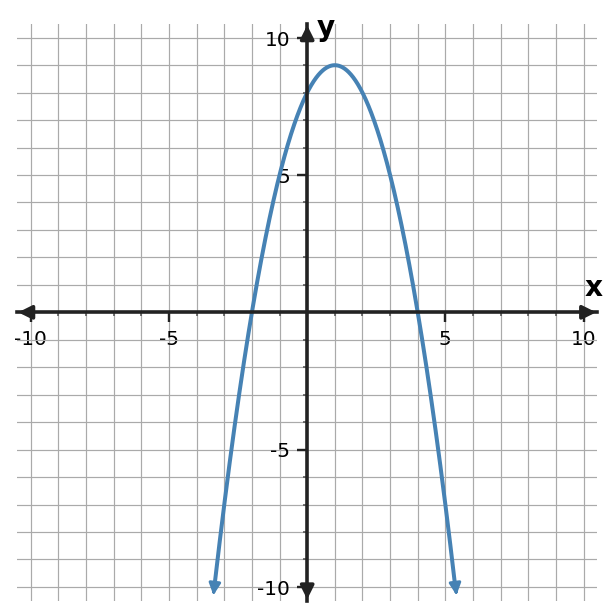

Algebra Practice 4.5 :::: Set 2
1. Use the graph to identify the vertex, axis of symmetry, direction of opening, and any visible x-intercepts.

2. A student claims that the constant term of a quadratic always gives the vertex. Critique the claim using $y=x^2 - 6x + 6$.
3. For $y=(x+2)(x-1)$, predict the x-intercepts and axis of symmetry before graphing.
4. For $y=x^2 + 4x + 6$, identify the y-intercept and the direction of opening.
5. Use the table to identify the axis of symmetry and vertex of the quadratic pattern.
| x | y |
|---|---|
| -2 | 5 |
| -1 | 2 |
| 0 | 1 |
| 1 | 2 |
| 2 | 5 |
6. Use the quadratic table to connect the numerical pattern to graph features. Identify the vertex, axis of symmetry, and direction of opening.
| x | y |
|---|---|
| 1 | 2 |
| 2 | -1 |
| 3 | -2 |
| 4 | -1 |
| 5 | 2 |
7. From the graph, predict the vertex, axis of symmetry, direction of opening, and x-intercepts.

8. For $y=(x+3)x$, predict the x-intercepts and axis of symmetry before graphing.
9. For $y=-x^2 + 2x - 2$, identify the y-intercept and the direction of opening.
10. Predict the key graph features from the table: vertex, axis of symmetry, and direction of opening.
| x | y |
|---|---|
| -4 | 1 |
| -3 | -2 |
| -2 | -3 |
| -1 | -2 |
| 0 | 1 |
11. From the upward-opening quadratic graph, predict the vertex, axis of symmetry, direction of opening, and x-intercepts.

12. A student says the axis of symmetry of $y=(x+2)(x-4)$ is $x=4$. Critique the claim.
13. A student claims the table has axis of symmetry $x=1$. Use the paired table values to critique the claim and identify the correct vertex.
| x | y |
|---|---|
| -2 | -2 |
| -1 | 1 |
| 0 | 2 |
| 1 | 1 |
| 2 | -2 |
14. Use the graph to identify the vertex, axis of symmetry, direction of opening, and any visible x-intercepts.

15. A student claims the table has axis of symmetry $x=2$. Use the paired table values to critique the claim and identify the correct vertex.
| x | y |
|---|---|
| -1 | 6 |
| 0 | 3 |
| 1 | 2 |
| 2 | 3 |
| 3 | 6 |
16. A student claims this quadratic has axis of symmetry $x=3$. Use the graph to critique the claim.

17. A student says the constant term of $y=x^2 - 6x + 7$ is the vertex. Critique the claim.
18. For $y=(x-1)(x-6)$, predict the x-intercepts and axis of symmetry before graphing.
19. Adult tickets cost \$8 and student tickets cost \$5. A school sold 8 tickets for \$55. Write and solve a system to determine how many of each type were sold.
20. Adult tickets cost \$8 and student tickets cost \$5. A school sold 6 tickets for \$36. Write and solve a system to determine how many of each type were sold.
21. Adult tickets cost \$8 and student tickets cost \$5. A school sold 8 tickets for \$49. Write and solve a system to determine how many of each type were sold.
22. A linear model for a school fundraiser is $M=1.5d+20$, where $d$ is days and $M$ is hundreds of dollars. Predict $M$ at $d=6$ and interpret the slope and intercept.
23. A linear model for a school fundraiser is $M=4d+8$, where $d$ is days and $M$ is hundreds of dollars. Predict $M$ at $d=7$ and interpret the slope and intercept.
24. A linear model for a school fundraiser is $M=2d+5$, where $d$ is days and $M$ is hundreds of dollars. Predict $M$ at $d=8$ and interpret the slope and intercept.